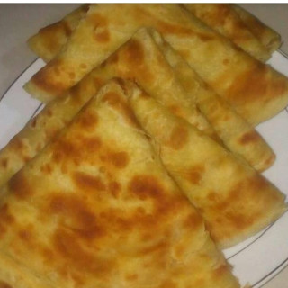

Soft Layered Chapatis

Description
The best type of flatbread? Yes sir!
Does it go well with every stew imaginable? Yes again
Is it the main ingredient for smocha? Correct again
This recipe is about the Kenyan version of the chapati. The chapati orginated from India and thanks to the Indian Ocean trade made
its way to Kenya where it is now a beloved flat bread eaten alongside a wide range of stews and curries or even on its own.
It is perfect for breakfast, lunch, dinner and second breakfast. They are customisable in that you can add vegetables such as
pumpkins, carrots, onions, corriander etc to the dough to add to the flavour
Ingredients
- 3 cups of flour
- 1 1/2 cups water
- 1 tsp salt
- 1/2 onion grated
- Vegetable oil for frying
Instructions
- Add 3 cups of flour and onion in a bowl.
- Add salt,2 tbsp of oil and 1 ½ cups of water in a separate jar/ bowl. Stir until the salt dissolves.
- Add the liquid mixture in step 2 in the flour bowl (step 1) and mix well.
- Keep kneading for 10 minutes and add flour if needed until the dough becomes non-sticky.
Add 2-3 tbsp of oil and continue kneading until the oil mixes well and the dough is soft.
Cover the dough and leave it for 40 minutes.
- After the 40 minutes, divide the dough into 10 - 15 equal parts making ball like shapes.
Arrange them in a flat surface dusted with flour(Cover with a damp tablecloth to avoid drying).
- Dust flour in the flat place and take one of the balls and start rolling with a rolling pin to a circular shape,
brush oil on top and roll it inwards to form a shape-like a rope, then create a coil-like shape and press the ball
down with your palm to make it flat. Repeat this process to the rest of the remaining balls of dough.
- Next, start rolling each of the coil-like shape doughs with the rolling pin to form a circular shape again.
-
In a hot pan, place the rolled out circular chapati and fry each side with little oil until its golden brown on medium heat.
Place your cooked chapati in a flat plat and cover with an aluminum foil.
- Repeat this step to the rest of the coil-like dough.
**The shaping may be challenging but with practice, you will get better**
*Serve with your favourite stew